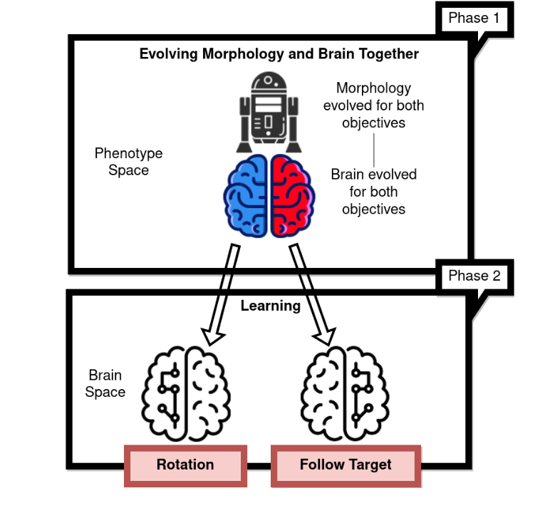
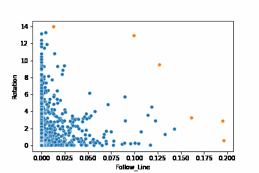
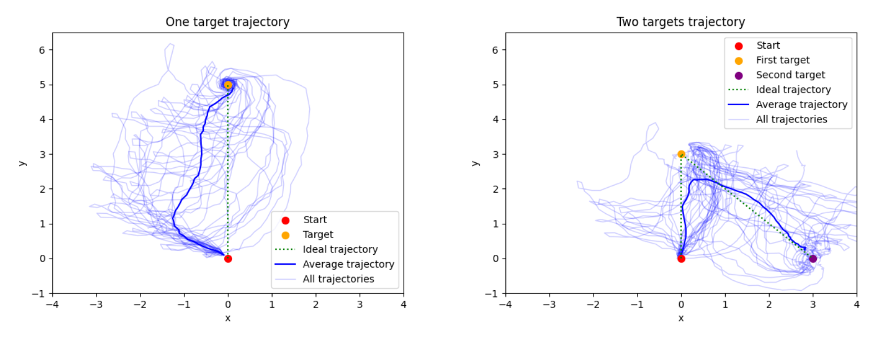

A Multi-brain Approach for Multiple Tasks in Evolvable Robots
Our paper discusses the idea of evolving body and brain for two tasks: rotation and moving forward on a straight line. We can combine these two actions to give the robot the ability to search for a target by rotating, and then to move to it.
How does the result look like?
In the end we have a controller that can switch between two brains. One brain that has evolved and learned to let the robot rotate, and the other brain that moves the robot straight ahead on a line.
You can see the results that enables the robot to chase after its target. First it rotates to find it, then it moves straight towards it. Moreover, in the second video, we demonstrate that this approach can be extended to look for and chase multiple targets.
Why this might be relevant?
Being able to achieve a more complex chain of actions to solve certain tasks is crucial for the survival of a species. For the robot, we mimik the behaviour to look for and move towards an object that could be a battery charger.
Having energy is crucial for the robot to survive.
The approach
We follow a two-stage approach to get robot morphologies that are able to perform the two tasks of rotation and targeted locomotion effectively. In the first stage we evolve the robot brain and morphology together with NSGA2 and in the second stage - the learning stage - we evolve the brain of the robot with one of the two objectives.

Experiments and Results
We first evolved a population of robots with NSGA2. The two objectives are rotation and targeted locomotion. The following hyperparameters are used for the evolution:
| Parameters | $1,2^*$ | Description |
|---|---|---|
| Population | 100,100 | Individuals per generation |
| Offspring | 50,50 | Offspring per generation |
| Generations | 300,200 | Termination condition |
| Mutation | NEAT, NEAT | Mutation operator |
| Crossover | NEAT, NEAT | Crossover operator |
| Parent selection | Tournament, Tournament | Parent selection operator |
| Survivor selection | NSGA-II, Tournament | Survivor selection operator |
| Tournament size | 2,2 | Number of individuals used in the tournament |
| Evaluation time | 50,50 | Duration of the test period per fitness evaluation in seconds |
| Runs | 30,30 | Repetitions per experiment |
| *Values for Phase 1, Phase 2 |

We can see how the orange pareto-front is changing over the course of the 300 generations of evolution.
Hence, after the evolution, we have a population of robot phenotypes that are able to perform the two tasks effectively.
Then we move on to the learning stage. We evolve the brain of the robot with one of the two objectives. Thus for a given robot morphology, we end up with two brains that are able to perform the two tasks separately.
Since the robot emerged to do both tasks, one observation is that during the learning stage, the robot is unlearning the other task and this seems crucial to get the isolated motor skills.

The trajectories are of a single robot morphology, with its best-learned rotation and follow target brains, starting at coordinates (0,0). The dark blue line is the average trajectory of the 30 runs and the other blue lines are the individual runs. The left Figure is in a one target environment and the right Figure is in a two targets environment.
Conclusion
We have shown that it is possible to evolve a robot that can perform two tasks effectively. The robot can rotate and move forward on a straight line. This is achieved by evolving the robot morphology and brain together with NSGA2 and then evolving two seperate brains for either task.